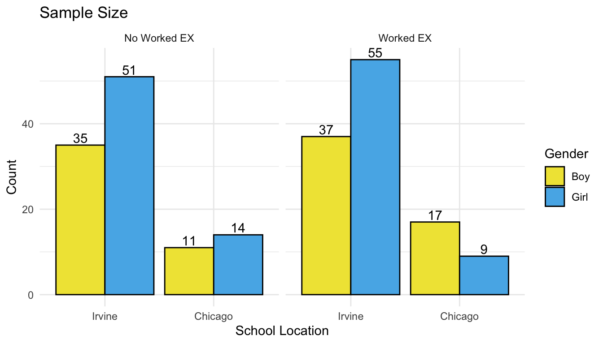
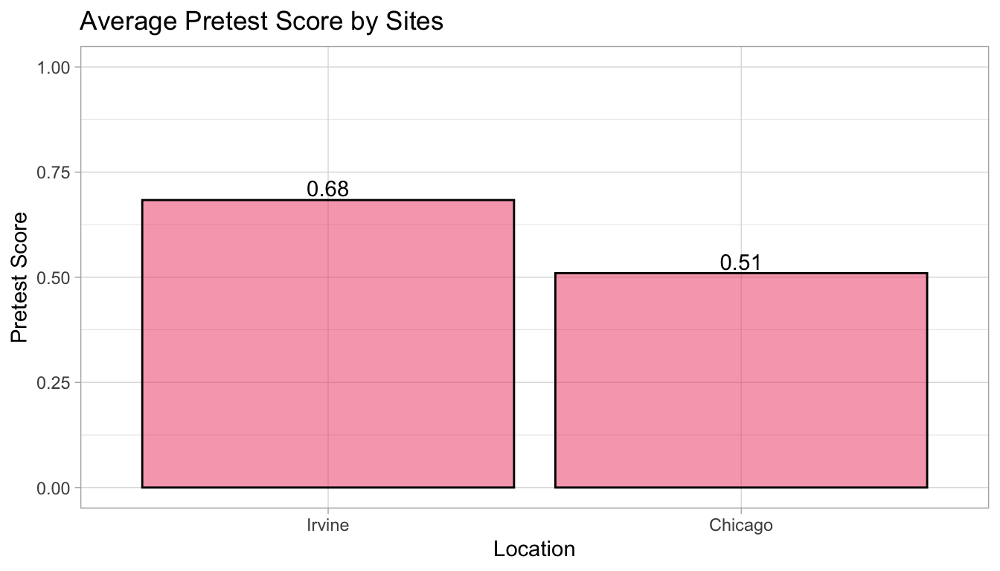
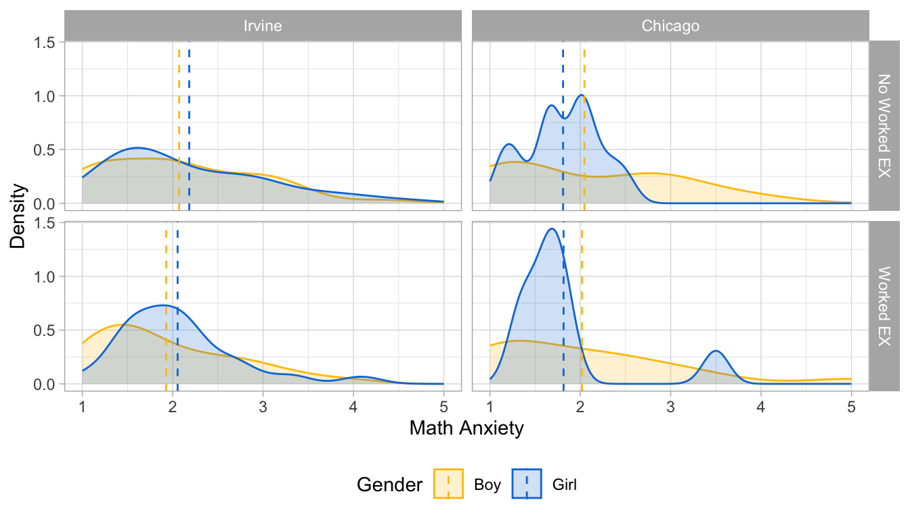
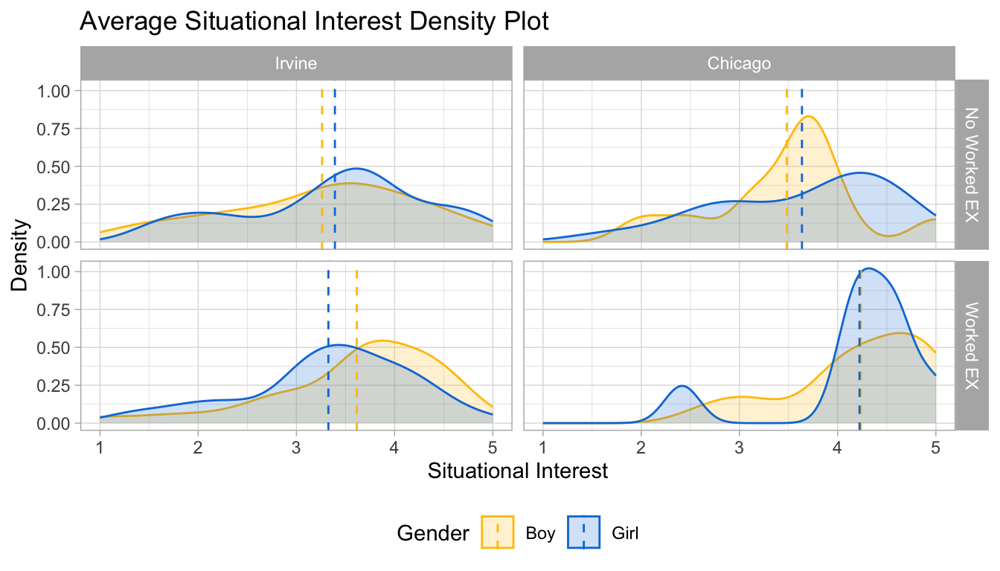
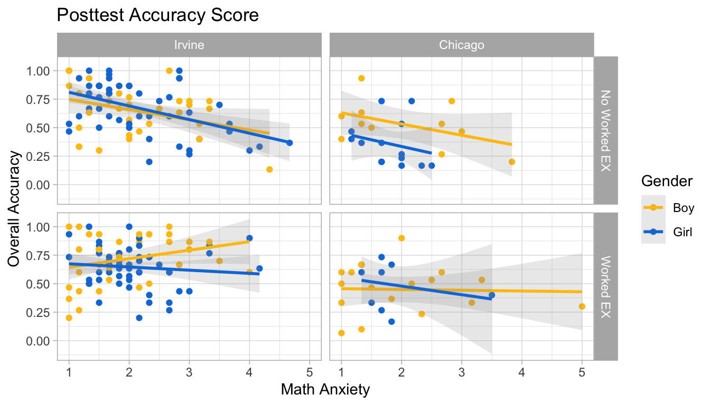
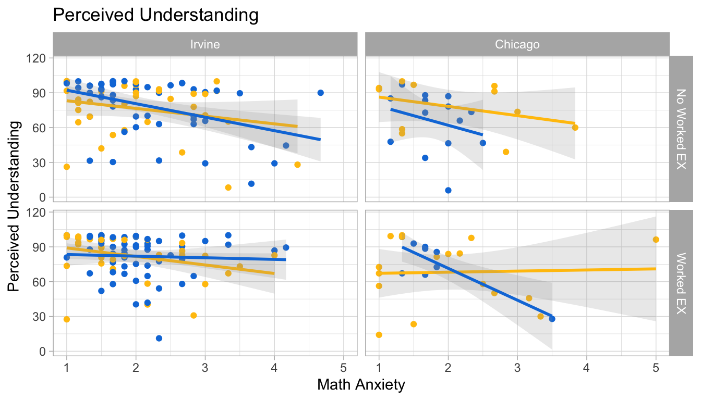
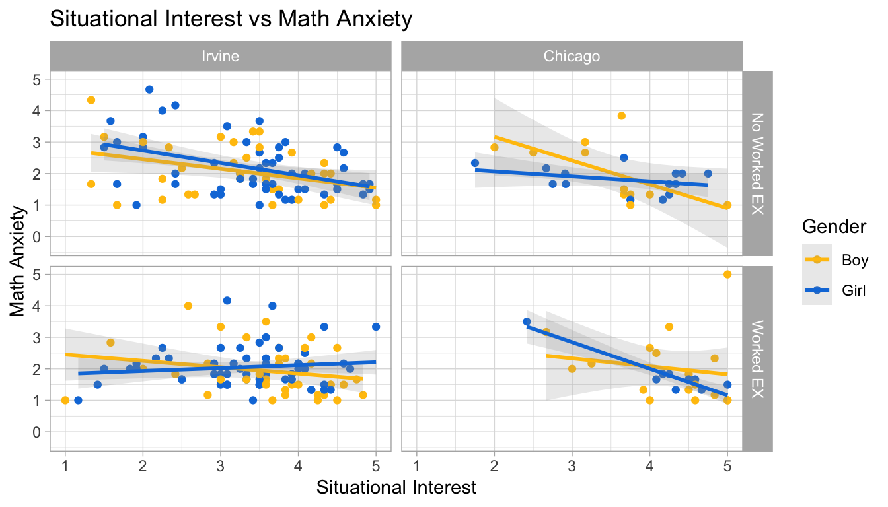

Gender Differences in the Impact of Worked Examples on Math Anxiety
Author
Emi Cervantes
Published
July 28, 2023
1 Research Goal
The goal of this study is to find the effectiveness of worked examples on math anxiety. Particularly, I’m interested in finding if there’s a gender difference in the effects of worked examples.
2 Research Questions & Variablees
Research Question: How does the impact of worked examples on mathematical anxiety differ by gender?
DV: Learning achievements (understanding and accuracy) Understand_avg, Del_OverallAcc
Warning: Using an external vector in selections was deprecated in tidyselect 1.1.0.
ℹ Please use `all_of()` or `any_of()` instead.
# Was:
data %>% select(tma_lst)
# Now:
data %>% select(all_of(tma_lst))
See <https://tidyselect.r-lib.org/reference/faq-external-vector.html>.
# Get rid of row that has NA values in Condition and/or Sexdf1 <- df1 %>%filter(Condition ==1| Condition ==2)df1 <- df1 %>%filter(!is.na(Sex))head(df1)
# Assign "no worked ex" group 0df1$Condition[df1$Condition ==2] <-0# Assign 0 for "boy" and 1 for "girl"df1$Sex[df1$Sex ==1] <-0df1$Sex[df1$Sex ==2] <-1# Make sure variable is categoricaldf1$chicago <-as.factor(df1$chicago)df1$Sex <-as.factor(df1$Sex)df1$race_rv <-as.factor(df1$race_rv)
3.0.5 Overall Data Descriptivies
skim(df1)
Data summary
Name
df1
Number of rows
229
Number of columns
17
_______________________
Column type frequency:
character
1
factor
3
numeric
13
________________________
Group variables
None
Variable type: character
skim_variable
n_missing
complete_rate
min
max
empty
n_unique
whitespace
Condition
0
1
1
1
0
2
0
Variable type: factor
skim_variable
n_missing
complete_rate
ordered
n_unique
top_counts
Sex
0
1.00
FALSE
2
1: 129, 0: 100
chicago
0
1.00
FALSE
2
0: 178, 1: 51
race_rv
33
0.86
FALSE
5
5: 73, 1: 42, 4: 39, 3: 35
Variable type: numeric
skim_variable
n_missing
complete_rate
mean
sd
p0
p25
p50
p75
p100
hist
pretest
1
1.00
0.64
0.48
0.00
0.00
1.00
1.00
1
▅▁▁▁▇
MW_day1_avg
7
0.97
2.21
1.00
1.00
1.60
2.00
2.60
6
▇▅▁▁▁
MW_day2_avg
0
1.00
1.88
0.99
1.00
1.20
1.60
2.20
6
▇▂▁▁▁
SI_avg
0
1.00
3.51
0.92
1.00
3.00
3.58
4.17
5
▁▂▅▇▆
TMA_1
0
1.00
1.93
0.99
1.00
1.00
2.00
2.00
5
▇▇▃▁▁
TMA_2
0
1.00
1.61
0.97
1.00
1.00
1.00
2.00
5
▇▃▁▁▁
TMA_3
0
1.00
2.10
1.18
1.00
1.00
2.00
3.00
5
▇▆▃▂▂
TMA_4
0
1.00
1.70
1.04
1.00
1.00
1.00
2.00
5
▇▃▂▁▁
TMA_5
0
1.00
2.44
1.21
1.00
1.00
2.00
3.00
5
▇▇▇▂▂
TMA_6
0
1.00
2.45
1.31
1.00
1.00
2.00
3.00
5
▇▇▅▂▃
TMA_avg
0
1.00
2.04
0.80
1.00
1.50
1.83
2.50
5
▇▆▃▁▁
Understand_avg
2
0.99
77.81
22.53
5.86
66.36
86.43
96.00
100
▁▁▁▃▇
Del_OverallAcc
0
1.00
0.62
0.23
0.07
0.47
0.63
0.80
1
▂▅▆▇▆
3.0.5.1 Ethnicity Descriptives
df1 %>%group_by(race_rv) %>%count() %>%mutate(p = n /nrow(df1))
Condition Boy-I Girl-I Boy-C Girl-C Total
1 No Worked EX 35 51 11 14 111
2 Worked EX 37 55 17 9 118
3 Total 72 106 28 23 229
Total number of samples in data: n = 229
Number of samples in No Worked EX group: n_{c} = 111
Number of samples in Worked EX group: n_{ex} = 118
cond <-c("No Worked EX", "Worked EX")names(cond) <-c(0, 1)location <-c("Irvine", "Chicago")names(location) <-c(0, 1)df1 %>%group_by(Sex, Condition, chicago) %>%count() %>%ggplot(aes(x = chicago, y = n, fill =as.factor(Sex))) +facet_grid(.~ Condition, labeller =labeller(Condition = cond)) +geom_bar(position ="dodge", stat ="identity", color ="black")+geom_text(aes(label=n), position=position_dodge(width=0.9), vjust=-0.25) +labs(title ="Sample Size", fill ="Gender", x ="School Location", y ="Count") +theme_minimal() +scale_fill_manual(values =c("#F0E442", "#56B4E9"), labels =c("Boy", "Girl"))+scale_x_discrete(labels=c("Irvine", "Chicago"))

3.0.5.3 Students’ Pretest Scores
pretest_plt <- df1 %>%group_by(chicago) %>%summarize(pre_avg =mean(pretest, na.rm =TRUE)) %>%ggplot(aes(x = chicago, y = pre_avg))+geom_bar(position ="dodge", stat ="identity", color ="black",fill ="#ef476f", alpha =0.5) +geom_text(aes(label=round(pre_avg,2)), position=position_dodge(width=0.9), vjust=-0.25) +ylim(0,1) +labs(title ="Average Pretest Score by Sites",x ="Location", y ="Pretest Score") +scale_x_discrete(labels=c("Irvine", "Chicago")) +theme_light()ggsave(pretest_plt, file="../../../outputs/pretest_plt.png", width =8, height =4)pretest_plt

3.0.5.3.1 t-test
The students from Irvine had higher average pretest score than students from Chicago. This indicates that most students from Irvine already knew about ratio strategies before the study. To find the significant difference by sites, we performed a t-test by sites:
t.test(pretest ~ chicago, data = df1)
Welch Two Sample t-test
data: pretest by chicago
t = 2.2026, df = 76.3, p-value = 0.03064
alternative hypothesis: true difference in means between group 0 and group 1 is not equal to 0
95 percent confidence interval:
0.01665668 0.33096711
sample estimates:
mean in group 0 mean in group 1
0.6836158 0.5098039
The result shows that the difference is significant (p-value = 0.03). Since both sites are significantly different, we will treat each site as separate data.
3.0.5.4 TMA Scores (ANOVA Test)
Math anxiety score was measured using six survey questions where students filled out their answer on a discrete scale range from 1 (low anxious) to 5 (high anxious).
# TMA mean by site, condition, and gendermu <- df1 %>%group_by(chicago, Condition, Sex) %>%summarize(mean =mean(TMA_avg))
`summarise()` has grouped output by 'chicago', 'Condition'. You can override
using the `.groups` argument.
# math anxiety density plotdf1 %>%ggplot(aes(x = TMA_avg, fill = Sex,color = Sex)) +geom_density(alpha =0.2) +theme_light() +geom_vline(data=mu, aes(xintercept=mean, color=Sex),linetype="dashed") +facet_grid(rows =vars(Condition),cols =vars(chicago),labeller =labeller(Condition = cond,chicago = location)) +scale_fill_manual(values =c("#FFC20A", "#0C7BDC"), labels =c("Boy", "Girl")) +scale_color_manual(values =c("#FFC20A", "#0C7BDC"), labels =c("Boy", "Girl")) +labs(x ="Math Anxiety", y ="Density",fill ="Gender", color ="Gender") +theme(legend.position="bottom")

Overall, all students seemed to have a low average math anxiety (1 ~ 2). In Irvine, girls seemed to have higher math average than boys in both condition. However, in Chicago, boys seemed to have higher average than girls.
Girls seemed to have a higher math anxiety compared to boys overall. Check if the difference is significant in each site by using ANOVA test:
m1 <-aov(TMA_avg ~ Condition + Sex + chicago + Condition*Sex + Condition*Sex*chicago,data = df1)summary(m1)
Df Sum Sq Mean Sq F value Pr(>F)
Condition 1 0.52 0.5223 0.814 0.368
Sex 1 0.15 0.1477 0.230 0.632
chicago 1 0.68 0.6824 1.064 0.303
Condition:Sex 1 0.00 0.0007 0.001 0.975
Condition:chicago 1 0.32 0.3230 0.504 0.479
Sex:chicago 1 1.08 1.0835 1.689 0.195
Condition:Sex:chicago 1 0.00 0.0006 0.001 0.975
Residuals 221 141.75 0.6414
No significant difference between gender on math anxiety was found by gender.
3.0.5.5 Mind Wandering and Situational Interest
Mind wandering was measured during both Day 1 and Day 2 of the study.
Situational interest was only measured during Day 1.
3.0.5.5.1 Situational Interest
# TMA mean by site, condition, and gendermu <- df1 %>%group_by(chicago, Condition, Sex) %>%summarize(mean =mean(SI_avg))
`summarise()` has grouped output by 'chicago', 'Condition'. You can override
using the `.groups` argument.
# math anxiety density plotdf1 %>%ggplot(aes(x = SI_avg, fill = Sex,color = Sex)) +geom_density(alpha =0.2) +theme_light() +geom_vline(data=mu, aes(xintercept=mean, color=Sex),linetype="dashed") +facet_grid(rows =vars(Condition),cols =vars(chicago),labeller =labeller(Condition = cond,chicago = location)) +scale_fill_manual(values =c("#FFC20A", "#0C7BDC"), labels =c("Boy", "Girl")) +scale_color_manual(values =c("#FFC20A", "#0C7BDC"), labels =c("Boy", "Girl")) +labs(title ="Average Situational Interest Density Plot",x ="Situational Interest", y ="Density",fill ="Gender", color ="Gender") +theme(legend.position="bottom")

In Irvine data, there was not much of a difference in situational interest by condition. In worked example group, gender difference was bigger than the no worked example. Boys tended to have more situational interest score than girls on average.
In Chicago data, the situational interests were different between the condition groups. Situational interests seemed to be much larger for worked example group, but with no gender difference.
3.0.5.5.2 Mind Wandering
Mind wandering scores were measured two times during the study: Day 1 and Day 2 (3 days after Day 1).
# TMA mean by site, condition, and gendermu1 <- df1 %>%group_by(chicago, Condition, Sex) %>%summarize(mean =mean(MW_day1_avg, na.rm =TRUE))
`summarise()` has grouped output by 'chicago', 'Condition'. You can override
using the `.groups` argument.
# TMA avg vs Overall accuracy scorestma_acc_plt <- df1 %>%ggplot(aes(x = TMA_avg, y = Del_OverallAcc, color =as.factor(Sex))) +geom_point() +geom_smooth(method ="lm", alpha =0.2) +scale_color_manual(values =c("#FFC20A", "#0C7BDC"), labels =c("Boy", "Girl")) +facet_grid(Condition ~ chicago, labeller =labeller(Condition = cond,chicago = location)) +theme_light() +labs(title ="Posttest Accuracy Score", x ="Math Anxiety", y ="Overall Accuracy", color ="Gender") ggsave(tma_acc_plt, file ="../../../outputs/tma_acc_plt.png",width =8, height =4)
`geom_smooth()` using formula = 'y ~ x'
tma_acc_plt
`geom_smooth()` using formula = 'y ~ x'

3.0.5.6.2 Perceived Understanding
# Fill out missing understanding avg data with the group averagedf1 %>%filter(is.na(Understand_avg))
# A tibble: 2 × 17
Condition Sex chicago race_rv pretest MW_day1_avg MW_day2_avg SI_avg TMA_1
<chr> <fct> <fct> <fct> <dbl> <dbl> <dbl> <dbl> <dbl>
1 1 0 0 3 0 NA 2.6 3.33 3
2 0 0 0 4 NA NA 1 2.67 2
# ℹ 8 more variables: TMA_2 <dbl>, TMA_3 <dbl>, TMA_4 <dbl>, TMA_5 <dbl>,
# TMA_6 <dbl>, TMA_avg <dbl>, Understand_avg <dbl>, Del_OverallAcc <dbl>
understand_avg1 <- df1 %>%filter(Condition ==1& Sex ==0& chicago ==0) %>%summarize(mean_understand =mean(Understand_avg, na.rm =TRUE))understand_avg2 <- df1 %>%filter(Condition ==0& Sex ==0& chicago ==0) %>%summarize(mean_understand =mean(Understand_avg, na.rm =TRUE))# assign imputed valuedf1[56, 16] = understand_avg1df1[198, 16] = understand_avg1
# TMA avg vs Perceived understandingtma_under_plt <- df1 %>%ggplot(aes(x = TMA_avg, y = Understand_avg, color =as.factor(Sex))) +geom_point() +geom_smooth(method ="lm", alpha =0.2) +scale_color_manual(values =c("#FFC20A", "#0C7BDC"), labels =c("Boy", "Girl")) +facet_grid(Condition ~ chicago, labeller =labeller(Condition = cond,chicago = location)) +theme_light() +labs(title ="Perceived Understanding", x ="Math Anxiety", y ="Perceived Understanding", color ="Gender") +theme(legend.position ="none")ggsave(tma_under_plt, file ="../../../outputs/tma_under_plt.png",width =8, height =4)
`geom_smooth()` using formula = 'y ~ x'
tma_under_plt
`geom_smooth()` using formula = 'y ~ x'

For both perceived understanding and posttest accuracy scores, there is not enough data from Chicago schools to conlcude relationship with math anxiety. However, in Irvine, we were able to observe potentila relationships.
Mind wandering seemed to have a positive relationship with math anxiety, that is higher mind wandeirng, more anxious students felt. Not much of a significant difference by gender and condition were observed.
Situational interest and math anxiety seemed to have a negative relationship, that is higher situational interest, less anxious students felt. Furthermore, there seemed to be a stronger relationship in no worked example compared to the worked example group.
3.0.5.7 Relationship between Math Anxiety and MW, SI
3.0.5.8 MW and TMA
# Day 1 Mind wanderingmw1_tma <- df1 %>%ggplot(aes(x = MW_day1_avg, y = TMA_avg, color = Sex)) +geom_point() +geom_smooth(method ="lm", alpha =0.2) +facet_grid(Condition ~ chicago, labeller =labeller(Condition = cond,chicago = location)) +theme_light() +scale_color_manual(values =c("#FFC20A", "#0C7BDC"), labels =c("Boy", "Girl")) +labs(title ="Day 1",x ="Mind Wandering", y ="Math Anxiety", color ="Gender")# Day 2 Mind wanderingmw2_tma <- df1 %>%ggplot(aes(x = MW_day2_avg, y = TMA_avg, color = Sex)) +geom_point() +geom_smooth(method ="lm", alpha =0.2) +facet_grid(Condition ~ chicago, labeller =labeller(Condition = cond,chicago = location)) +theme_light() +scale_color_manual(values =c("#FFC20A", "#0C7BDC"), labels =c("Boy", "Girl")) +labs(title ="Day 2",x ="Mind Wandering", y ="Math Anxiety", color ="Gender")
Overall in each group and site, mind wandering and math anxiety had a positive relationship. That is, more anxious student felt, their mind wandering score increased. This result was the same for majority, except for worked example group in Chicago from both day 1 and day 2, since some of the gender group has a slight negative relationship. This result may be due to a small sample size in the Chicago data.
3.0.5.9 SI and TMA
# Day 1 Mind wanderingdf1 %>%ggplot(aes(x = SI_avg, y = TMA_avg, color = Sex)) +geom_point() +geom_smooth(method ="lm", alpha =0.2) +facet_grid(Condition ~ chicago, labeller =labeller(Condition = cond,chicago = location)) +theme_light() +scale_color_manual(values =c("#FFC20A", "#0C7BDC"), labels =c("Boy", "Girl")) +labs(title ="Situational Interest vs Math Anxiety",x ="Situational Interest", y ="Math Anxiety", color ="Gender")
`geom_smooth()` using formula = 'y ~ x'

In each condition, gender, and sites, there was a negative relationship between situational interest and math anxiety. That is, the situational interest scores decreased as they felt more anxious.Similar to the mind wandring situation, chicago data was too small to conclude results from linear regression.
4 Multigtoup Analysis with Path Analysis
We constructed structural equation models to model learning achievements: Del_OverallAcc and Understand_avg. We fit the model for each site data (df_c and df_i), and chi-square test was used to determine if the free model was significantly different from the constrined model.
Chi-squared difference test showed a significant result (p = 0.004444), which indicated that free model and constrained models are significantly different. Now, we need to see which predictors are different.
We find that the models are still significantly different, implying that the path between TMA_avg -> Del_OverallAcc should not be constrained and instead that it should be left to vary among gender.
Chi-squared difference test showed a significant result (p = 0.004444), which indicated that free model and constrained models are significantly different. Now, we need to see which predictors are different.
In this case, there is not a significant difference between the two models (P = 0.659), implying that there is no difference in the fit of the constrained model and the unconstrained model and that this constraint is valid.
There was no significant difference by gender in the effect of worked examples on math anxiety and learning achievements. From our previous results, we conclude that worked examples are effective instructional tools in mitigating the effect of math anxiety, regardless of gender differences. Additionally, worked examples were most effective in reducing the effect of math anxiety on posttest accuracy scores instead of perceived understanding, which may suggest that worked examples are most effective in improving students’ problem solving skills.
Moreover, our results from path analysis showed that girls and boys had significant difference in the effect of math anxiety on posttest accuracy scores, without accounting for the difference in condition. This result indicated that girls’ problem solving skills are negatively effected by math anxiety than boys, which may also support previous studies that found gender gaps in test anxiety.